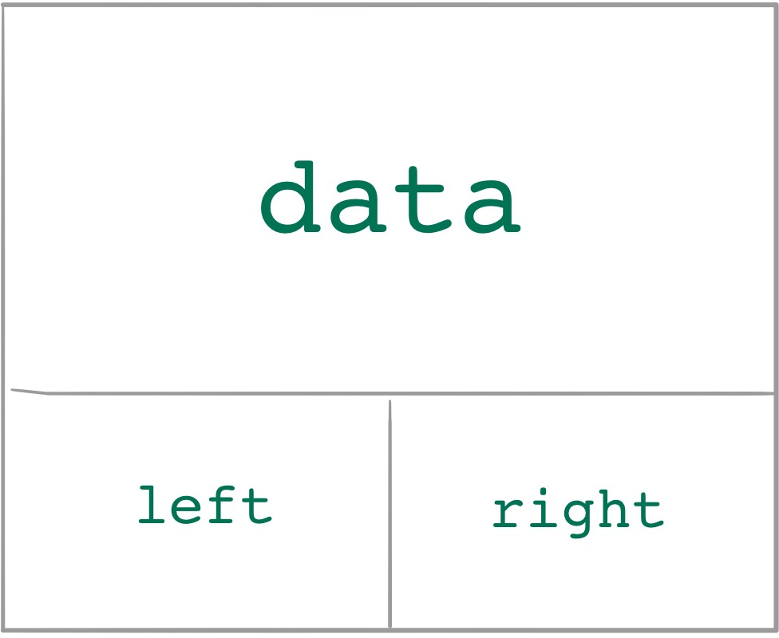

class: center, middle, title-slide # CSCI-UA 102 ## Data Structures <br> ## Data Structures and Algorithms <br>(Bird's Eye View) .author[ Instructor: Joanna Klukowska <br><br><br> ] .license[ Copyright 2020 Joanna Klukowska. Unless noted otherwise all content is released under a <br> [Creative Commons Attribution-ShareAlike 4.0 International License](https://creativecommons.org/licenses/by-sa/4.0/).<br> Background image by Stewart Weiss<br>] --- layout:true template: default name: section class: inverse, middle, center --- layout:true template: default name: breakout class: breakout, middle --- layout:true template:default name:slide class: slide .bottom-left[© Joanna Klukowska. CC-BY-SA.] --- template: section # Stacks --- ## What Is a Stack? -- <figure style="float:right;margin-top:-50px;transform:rotate(5deg)scale(0.9)"> <img width="350" alt="stack of dinner plates" src="https://upload.wikimedia.org/wikipedia/commons/thumb/d/d4/Stack_of_dinner_plates.jpg/512px-Stack_of_dinner_plates.jpg"> </img> .small[<figcaption markdown="1"> Stack of Dinner Plates<br>Santeri Viinamäki / [WikimediaCommons](https://commons.wikimedia.org/wiki/File:Stack_of_dinner_plates.jpg) / [CC BY-SA](https://creativecommons.org/licenses/by-sa/4.0) <figcaption markdown="1"> ] </figure> -- <figure style="float:left;margin-top:100px;transform:rotate(-5deg)scale(1.0)"> <img width="250" alt="financial books" src="https://upload.wikimedia.org/wikipedia/commons/c/c1/Financial_books.jpg"> </img> .small[<figcaption markdown="1"> Financial Accounting Books<br>Asommerv / [WikimediaCommons](https://commons.wikimedia.org/wiki/File:Financial_books.jpg) / [CC BY-SA](https://creativecommons.org/licenses/by-sa/4.0) <figcaption markdown="1"> ] </figure> -- <figure style="float:right;margin-right:100px;margin-top:-20px;transform:rotate(5deg)scale(1.0)"> <img width="250" alt="a stack of tractor tyres" src="https://upload.wikimedia.org/wikipedia/commons/thumb/0/03/A_stack_of_tractor_tyres_-_geograph.org.uk_-_1409842.jpg/512px-A_stack_of_tractor_tyres_-_geograph.org.uk_-_1409842.jpg"> </img> <figcaption markdown="1">.small[A Stack of Tractor Tyres<br>Andy F / [WikimediaCommons](https://commons.wikimedia.org/wiki/File:A_stack_of_tractor_tyres_-_geograph.org.uk_-_1409842.jpg) / [CC BY-SA](https://creativecommons.org/licenses/by-sa/4.0)] <figcaption markdown="1"> </figure> --- ## What Is a Stack? <figure style="float:right"> <img width="325" alt="a stack" src="https://upload.wikimedia.org/wikipedia/commons/thumb/2/29/Data_stack.svg/256px-Data_stack.svg.png"> </img> <figcaption markdown="1">.small[Boivie / [WikimediaCommons](https://commons.wikimedia.org/wiki/File:Data_stack.svg) / Public Domain ]<figcaption markdown="1"> </figure> .left-column2[ .important[ __Stack__ is a linear structure in which the elements can be added to and removed from only one end. <br> It is often referred to as a __last in first out__ (LIFO) data structure, because the element that was added most recently will be removed before the elements that have been added before it. ] ] -- .below-column2[ .important[ Stack operations are: - __`push`__ which adds an element to the top of the stack - __`pop`__ which removes (and often returns) the element from the top of the stack - __`top`__ which returns (but does not remove) the element from the top of the stack ] ] -- We will look at ways of implementing stacks using both arrays and linked lists. Our performance goal for all of the operations will be __O(1)__! --- template: section # Queues --- template: slide ## What Is a Queue -- <figure style="float:left;margin-top:150px;transform:rotate(-5deg)scale(1.2)"> <img width="325" alt="water slide queue" src="https://upload.wikimedia.org/wikipedia/commons/thumb/d/df/Jonoa_Serenassa.jpg/512px-Jonoa_Serenassa.jpg"> </img> .small[<figcaption markdown="1"> Water Slide Queue<br>kallerna / [WikimediaCommons](https://commons.wikimedia.org/wiki/File:Jonoa_Serenassa.jpg) / [CC BY-SA](https://creativecommons.org/licenses/by-sa/2.0) <figcaption markdown="1"> ] </figure> -- <figure style="float:right;margin-top:-50px;transform:rotate(5deg)scale(1.2)"> <img width="325" alt="JFK plane queue" src="https://upload.wikimedia.org/wikipedia/commons/thumb/8/8c/JFK_Plane_Queue.jpg/512px-JFK_Plane_Queue.jpg"> </img> .small[<figcaption markdown="1"> JFK Plane Queue<br>Giorgio Montersino / [WikimediaCommons](https://commons.wikimedia.org/wiki/File:JFK_Plane_Queue.jpg) / [CC BY-SA](https://creativecommons.org/licenses/by-sa/2.0) <figcaption markdown="1"> ] </figure> -- <figure style="float:right;margin-top:50px;margin-right:50px;transform:rotate(5deg)scale(1.2)"> <img width="325" alt="social distancing line to Trader Joe's" src="https://upload.wikimedia.org/wikipedia/commons/thumb/6/67/Social_distancing_in_a_Trader_Joe%27s_line_in_Cambridgeport%2C_Cambridge%2C_Massachusetts_March_21%2C_2020.jpg/512px-Social_distancing_in_a_Trader_Joe%27s_line_in_Cambridgeport%2C_Cambridge%2C_Massachusetts_March_21%2C_2020.jpg"> </img> .small[<figcaption markdown="1"> Social Distancing Line to Trader Joe's<br>Strmsrg / [WikimediaCommons](https://commons.wikimedia.org/wiki/File:Social_distancing_in_a_Trader_Joe%27s_line_in_Cambridgeport,_Cambridge,_Massachusetts_March_21,_2020.jpg) / [CC BY-SA](https://creativecommons.org/licenses/by-sa/4.0) <figcaption markdown="1"> ] </figure> --- ## What Is a Queue .left-column2[ .important[ __Queue__ is a linear structure in which the elements can be added at the back (one end of the queue) and removed from the front (the other end of the queue). <br> It is often referred to as a __first in first out__ (FIFO) data structure, because the element that was added most recently will be removed after the elements that have been added before it. ] ] .right-column2[ <figure > <img width="300" alt="a queue" src="https://upload.wikimedia.org/wikipedia/commons/thumb/5/52/Data_Queue.svg/256px-Data_Queue.svg.png"> </img> <figcaption markdown="1">.small[Vegpuff / [WikimediaCommons](https://commons.wikimedia.org/wiki/File:Data_Queue.svg) / [CC BY-SA](https://creativecommons.org/licenses/by-sa/3.0) ]<figcaption markdown="1"> </figure> ] -- .below-column2[ .important[ Queue operations are: - __`enqueue`__ which adds an element to the end/back of the queue - __`dequeue`__ which removes (and often returns) the element from the front of the queue - __`font`__ which returns (but does not remove) the element at the front of the queue ] ] -- We will look at ways of implementing queues using both arrays and linked lists. Our performance goal for all of the operations will be __O(1)__! --- template: section # Binary (Search) Trees --- ## Array vs Linked List Performance At the end of the _Arrays vs Linked List_ discussion, some of you might have been a bit unsatisfied with the benefits of the linked list design: .continue-column[ .left-column2[ Arrays - .green[constant access time to elements, `O(1)`] ] .right-column2[ Linked List - .red[linear access time to elements, `O(N)`] ] ] -- .continue-column[ .left-column2[ - linear time search, if unsorted, `O(N)` ] .right-column2[ - linear time search, if unsorted, `O(N)` ] ] -- .continue-column[ .left-column2[ - .green[logarithmic time search, if sorted, `O(log N)`] ] .right-column2[ - .red[linear time search, if sorted, `O(N)`] ] ] -- .continue-column[ .left-column2[ - .red[possibly linear time to add an element (when the array is full and we need to resize), `O(N)`] ] .right-column2[ - .green[constant time to add an element to the end (because there is no need to resize), `O(1)`] ] ] -- .below-column2[ <br/> ---- __BUT__ the linked lists give us: - the idea of connecting elements in a different way, and we'll use it in more complicated structures - building blocks for more complicated structures - very good performance when we operate only on the ends (i.e., no need to access any elements except for first and last) - good enough performance when we do not need binary search - good enough performance when we are working with small lists ] --- name:bst ## Getting Back Binary Search -- .center[ <img alt="from a binary search to a bst" src="img/03/bst-67.jpg" width=400px /> ] --- template:bst .center[ ] --- template:bst .center[ ] --- template:bst .center[ ] --- template:bst .center[ ] --- template:bst .center[ ] --- template:bst .center[ ] --- template:bst .center[ ] --- template:bst .center[ ] --- template:bst .center[ ] --- template:bst .center[ ] --- template:bst .center[ ] --- template:bst .center[ ] --- ## A Different Kind of Node .left-column2-large[ .left-column2[  ] ```java class Node { int data; Node left; Node right; } ``` ] -- .right-column2-small[ - The __nodes__ that we used for a linked list stored the data and a single reference to the `next` node. - For a structure from the previous slide, we need to keep track of two different _next_'s: the one on the left and the one on the right: ] -- .center[ ] --- name:bst ## Binary Search Trees .left-column2-large[ .important[ A __binary search tree__ is a structure that starts with a special element called __root__ and in which all the values stored to the left of the root are smaller than it, and all the values stored to the right of the root are larger than it. ] .center[ ] {{content}} ] --- template: bst We will look at ways of implementing binary search trees so that they guarantee O(log N) performance on pretty much all operations (although this will require some balancing work!). -- <figure style="transform: translateX(-80px)scale(1.3);"> <figcaption>.tiny.center[balanced bst]</figcaption> </figure> -- <figure style="transform: translateY(30px)translateX(-30px)scale(1.1);"> <figcaption>.tiny.center[unbalanced bst]</figcaption> </figure> --- template: section # Hash Tables --- name: hash-motivation ## A long time ago in a galaxy far, far away... <br> .right-column2[ <figure> <img width="120" style="transform:translateX(100px)scale(2.1)" alt="Lightsaber blue" src="https://upload.wikimedia.org/wikipedia/commons/thumb/6/67/Lightsaber_blue.svg/256px-Lightsaber_blue.svg.png"> </img> <img width="120" style="transform:translateX(-100px)scale(1.8)" alt="Lightsaber green" src="https://upload.wikimedia.org/wikipedia/commons/thumb/f/f8/Green_lightsaber_transparent.png/512px-Green_lightsaber_transparent.png"> </img> .tiny[<figcaption markdown="1" style="margin-top:50px;">Lightsaber blue, Nécropotame / [WikimediaCommons](https://commons.wikimedia.org/wiki/File:Lightsaber_blue.svg) / Public Domain <br> Lightsaber green , Mysid / [WikimediaCommons](https://commons.wikimedia.org/wiki/File:Green_lightsaber_transparent.png) / Public Domain <figcaption markdown="1"> ] </figure> ] .code.big[ __Darth Vader, Han Solo, Leia, Obi-Wan Kenobi, Chewbacca, Yoda, R2-D2, Luke Skywalker, Lando, Padme, Count Dooku, ... were picking up their graded term papers on inter-galactic conquests from the professor's office.__ ] .below-column2[ ] -- Professor Latin just left the unsorted pile of papers and students needed to flip through all the papers to find their own. -- __unsorted list search__, `O(N)` -- Professor English left a sorted pile of papers and students attempted a _phone-book_ like search to find their own papers. -- __sorted list search__, `O(logN)` --- ## A long time ago in a galaxy far, far away... .left-column2[ Professor Physics attempted to simplify the search even further. She subdivided the alphabet into 8 bins: names starting with A-C, names starting with D-F, names starting with G-I, .... The students simply need to go to the bin that contains the right letter and find their paper among the smaller subset of all the papers. {{content}} ] -- <br> ---- __What is the performance of this <br>_bin search_, `O(???)`?__ <br> {{content}} -- - well this depends on how many students end up in the same bin --- ## A long time ago in a galaxy far, far away... __Professor CS__ liked the idea of Professor Physics, but would much rather have unique bins for each student. Unfortunately, she quickly realized this will be difficult with many students having the last name that starts on the same letter. She came up with a _collision resolution_ scheme that stores the papers of students with the same first letter of their last name in a short chain of papers. -- <br> .center[ ] -- __lookup in a hash table__, `O(1)` (assuming this is properly designed) --- ## Hash Table The last two ways of organizing the students' papers follow the principles of a hash table: __we want to have a mapping from the actual data (papers in this case) to the location in memory where that data is stored__. - Professor Physics and Professor CS use a first letter of the student's name to determine where their paper should be located. - Each letter of the alphabet is then stored in a bin or a list of papers that students can _quickly_ search through. --- ## Summary of Important Concepts Stack (last in, first out) - operations allowed only at one end: `push`, `pop`, `top` - goal: `O(1)` performance for `push` and `pop` -- Queue (first in, first out) - operations allowed only at the two ends: `enqueue`, `dequeue`, `front` - goal: `O(1)` performance for `enqueue` and `dequeue` -- Binary Search Tree - gaining back the binary search for _sorted_ data - goal: `O(logN)` performance for almost all operations -- Hash Tables - allows fast look-ups based on some characteristic of the data (ex., first letter of the last name) - goal: `O(1)` performance for almost all operations (challenging to implement to achieve this) --- template:section # Examples and Things to Think About --- ## Stacking Things Up Consider the following sequence of operations on an initially empty stack. Show the stack content at each of the indicated lines. Make sure to indicate where the top and the bottom of your stack are. ```java push 5 push 10 push 23 pop push 17 top push 10 // show the content of the stack pop TMP = pop push 5 * TMP // show the content of the stack TMP = top push 10 * TMP push 100 * TMP // show the content of the stack pop pop pop // show the content of the stack ``` --- ## Queuing Up Consider the following sequence of operations on an initially empty queue. Show the queue content at each of the indicated lines. Make sure to indicate where the front and the back of your queue are. ```java enqueue 5 enqueue 10 enqueue 23 dequeue enqueue 17 front enqueue 10 // show the content of the queue dequeue TMP = dequeue enqueue 5 * TMP // show the content of the queue TMP = front enqueue 10 * TMP enqueue 100 * TMP // show the content of the queue dequeue dequeue dequeue // show the content of the queue ``` --- ## Working with a Binary Search Tree Consider the binary search tree from one of the earlier slides: .center[ ] - If we decide to add a few more values to this tree, where do you think the nodes should be connected? Here are a few values to be added: __65__, __14__, __27__. Make sure that the resulting tree is still a binary search tree! - Try to design an algorithm that determines the smallest/largest value that is stored in a binary search tree. - Try to design an algorithm that determines the largest value that is smaller than the root (or rather the value stored in the root node). <br> Is this algorithm in any way similar to the algorithm you suggested for the previous prompt? --- ## Better Organization for Papers Our _Star Wars_ characters are not from a very large class, so they can quickly find their papers when they are mapped based on the first letters of their names. But imagine a much much much larger group: __what if we had hundreds or thousands of students__? Each letter of the alphabet would have a huge number of papers associated with it. __Your mission__: Come up with a more unique way of mapping student names to locations where their papers might be stored? </optgroup>